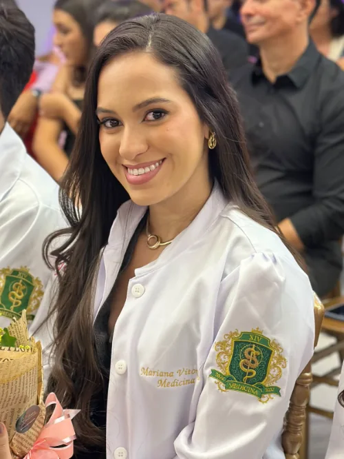
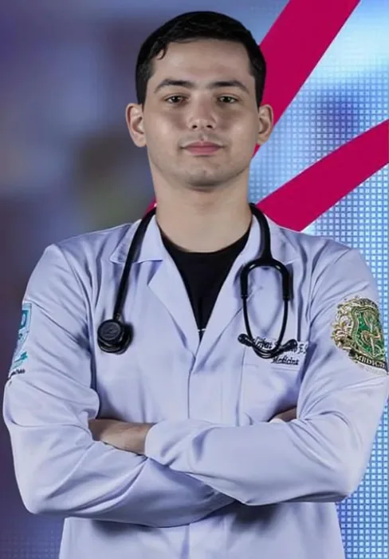
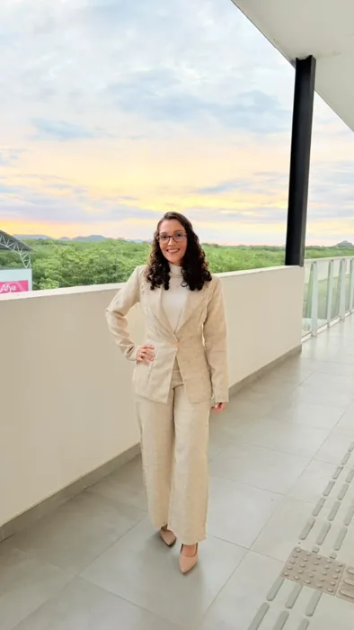
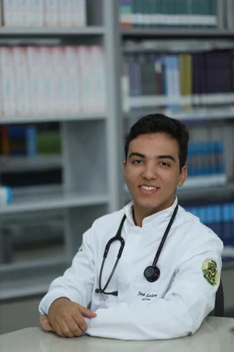
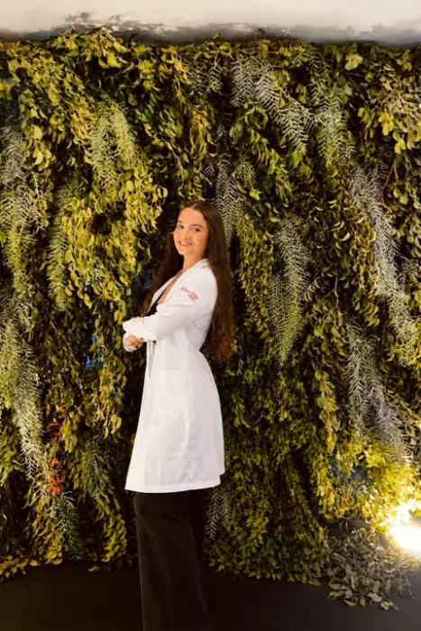
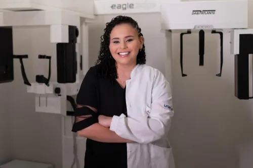

Ciência, prática e escuta na sua formação.
Chapa Acadêmica Dr. Ângelo Machado, candidata à gestão 2027.1/2027.2 do CAMFF, o Centro Acadêmico de Medicina da Afya Guanambi.
Chapa Acadêmica Dr. Ângelo Machado, candidata à gestão 2027.1/2027.2 do CAMFF, o Centro Acadêmico de Medicina da Afya Guanambi.
A Chapa Acadêmica Dr. Ângelo Machado nasce da união de 12 estudantes de Medicina da Afya Faculdade de Ciências Médicas de Guanambi, de diferentes períodos, turmas e trajetórias, mas com um propósito em comum: transformar o Centro Acadêmico Dr. Francisco Fernandes (CAMFF) em um espaço de voz, de formação e de oportunidades para cada acadêmico. Do 1º ao 8º período, estamos em todas as etapas da graduação. Isso nos permite conhecer de perto as dores de quem acabou de chegar e os desafios de quem já se aproxima do internato. Nossa composição nos coloca para ouvir, entender e representar todos os períodos.
O nome da chapa é uma homenagem a um médico, professor e pesquisador brasileiro, referência na educação médica e na ciência. Ele inspira nossos valores: formar médicos competentes, curiosos, comprometidos com o conhecimento e com a sociedade.
Nosso pilares: Ensino, pesquisa, extensão, integração acadêmica e representação estudantil. Esses cinco eixos sustentam as 12 propostas que apresentamos, pensadas para contemplar todos os períodos do curso. Nos comprometemos a atuar com ética, diálogo e responsabilidade, respeitando as diferentes opiniões e valorizando o conhecimento científico. Acreditamos que um Centro Acadêmico forte é aquele em que todos se sentem ouvidos, representados e convidados a participar.
Diferentes períodos, histórias e experiências, com o mesmo propósito: uma faculdade mais acolhedora.

Mariana Vitória Queiroz Pereira Vitorino 2ª Secretária · Turma 14 – 1º período
Herbert Augusto Fernandes Souza 1º Tesoureiro · Turma 7 – 8º período
Amona Rocha Prates Alves 2ª Diretora de Ensino · Turma 8 – 7º período
José Guilherme Lacerda Lima 1º Diretor de Pesquisa · Turma 7 – 8º período
Maria Paula Barros Jota 1ª Diretora de Marketing · Turma 12 – 3º período
Iscila Emiliane Pereira 2ª Diretora de Marketing · Turma 10 – 5º períodoToda demanda recebe retorno. Ela chega direto para a diretoria da chapa; deixe seu e-mail se quiser resposta individual.